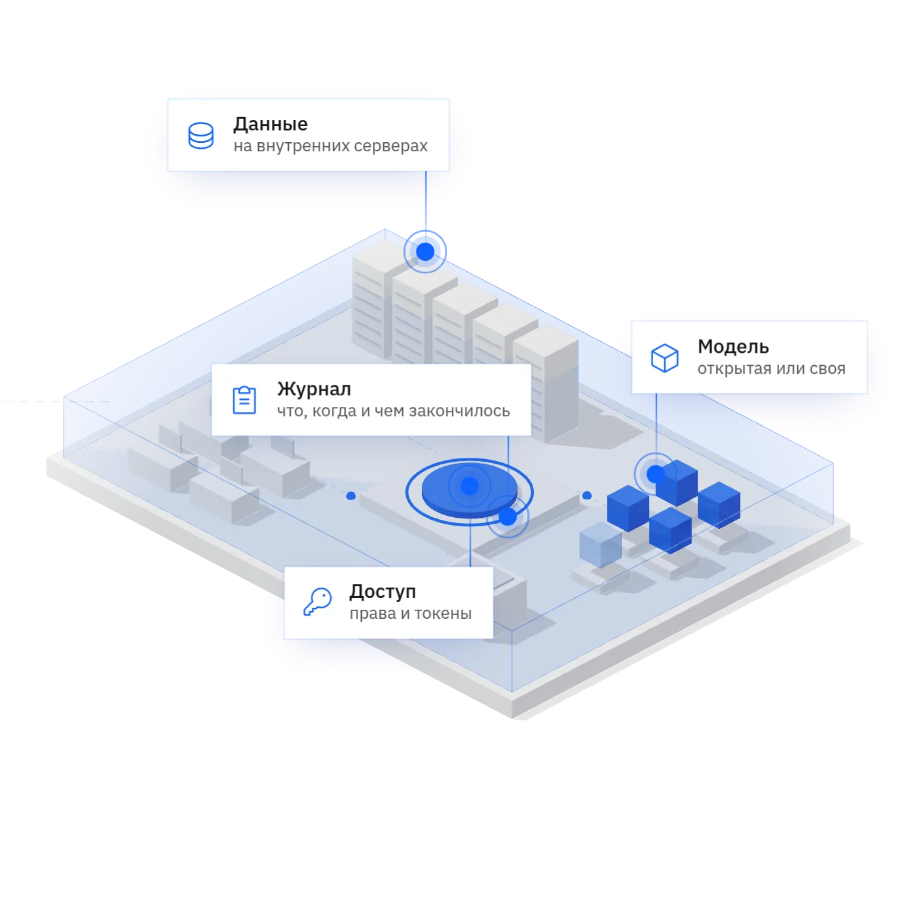

Главная / Для ИТ и безопасности
Атриум для ИТ и безопасности
Как устроен Атриум, что со службой безопасности и когда будут документы для закупки. У каждого пункта статус: есть, в работе или план со сроком.

Схема
Как работает
Работа с моделями идёт в браузере, без ручной настройки серверов.
Добавить
Команда указывает, где лежат файлы модели. Модель появляется в общем списке.
Проверить
Атриум проверяет файлы до запуска. Если файла нет или он не читается, модель не запустится. Причина попадёт в журнал.
Запустить
Запуск и остановка одной кнопкой.
Подключить
Модель получает HTTPS-адрес, программы обращаются к нему с токеном.
Техника
На чём Атриум работает и как встраивается в инфраструктуру компании.
| Что | Как | Статус |
|---|---|---|
| Где работает | Kubernetes на Linux-серверах компании. Интернет не нужен | Есть |
| Какие модели | Предиктивные (прогнозы, оценки, классификация) и генеративные, открытые и собственные. На серверах с видеокартами и без | Есть |
| Форматы моделей | scikit-learn проверен. XGBoost, LightGBM, ONNX, PyTorch и TensorFlow проверяются | В проверке |
| Как программы обращаются к модели | По HTTPS-адресу, который выдаёт Атриум. REST, открытый стандартный протокол для моделей | Есть |
| Кто может обратиться к модели | Только с токеном доступа. Без токена отказ. Лимиты на число и размер запросов | Есть |
| Вход пользователей | Встроенный вход, у каждого свои роли | Есть |
| Каталог пользователей компании | Подключение к AD или LDAP | I кв. 2027 |
| Хранилище файлов моделей | Сейчас хранилище в составе Атриума. Подключение S3-совместимого хранилища компании | В работе |
| Закрытие модели внутри кластера | Сетевая политика: к модели можно обратиться только через шлюз | IV кв. 2026 |
| Выгрузка журнала | Передача в систему мониторинга компании (SIEM) | 2027 |
Серверы для пробы
Ориентир: три машины по 8 ядер и 32 ГБ памяти каждая. Для генеративных моделей нужны видеокарты. Точные требования уточняются по замерам.
Безопасность
Службе безопасности нужны доказательства. Журнал показывает автора, время и объект каждого действия.
| Что проверяет служба безопасности | Как в Атриуме | Статус |
|---|---|---|
| Команды отделены друг от друга | Каждая команда работает в своём пространстве и не видит чужого | Есть |
| У каждого только нужные права | Кто может смотреть, а кто запускать, задаёт администратор | Есть |
| Всё записывается | Журнал: кто, что и когда сделал, чем закончилась операция | Есть |
| Контроль ИИ-помощников, которые сами выполняют действия | Права и история для них, как для моделей | 2027 |
Приказ ФСТЭК России № 117 требует защищать ИИ в государственных системах, по проекту изменений с 1 марта 2027 года требования расширят. Сертификата ФСТЭК у Атриума пока нет.
Чего пока нет
Чтобы не было сюрпризов на пилоте.
- Откат в один шагПрежнюю версию можно развернуть снова вручную.
- Автомасштаб
- Деление видеокарты между моделями
- Дообучение, поиск по документам, агентыАтриум запускает готовые модели.
- Оценка качества ответовАтриум пока не оценивает качество моделей, его проверяют на задачах заказчика.
- OpenAI-совместимый адресПрограммы обращаются по REST.
Сроки для закупки
Что нужно, чтобы купить Атриум по правилам крупной компании или госзаказчика, и когда это будет.
| Что | Подробности | Статус |
|---|---|---|
| Установка | На Linux-серверы компании вместе с её специалистами | Есть |
| Установка в один шаг | На закрытые серверы без интернета | IV кв. 2026 |
| Российские ОС | Работа на российских операционных системах | I кв. 2027 |
| Реестр российского ПО | Включение в реестр | I кв. 2027 |
| Сертификат ФСТЭК | Срок уточняется |
Кто за что отвечает
Компания или интегратор
- Серверы и Kubernetes
- Программы под задачу
- Выбор и качество моделей
Атриум
- Запуск моделей, права, журнал
- Обновления программы
- Поддержка: отвечают авторы продукта
Частые вопросы
Можно ли собрать такое самим?
Можно. Придётся связать хранилище, серверы, проверку файлов и адреса моделей, написать пространства команд, роли и журнал, а потом обновлять всё это и отвечать за поломки.
Нужен ли доступ в интернет?
Нет. Атриум и модели работают на внутренних серверах.
Как считается цена?
Цена зависит от числа пользователей и видеокарт. Её называют после разговора о задаче.
Вопросы службы безопасности
Достаточно описать, какие модели нужны и где они должны работать. Ответ в течение рабочего дня.